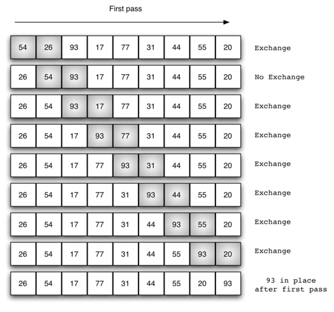
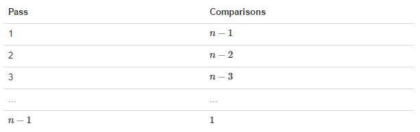
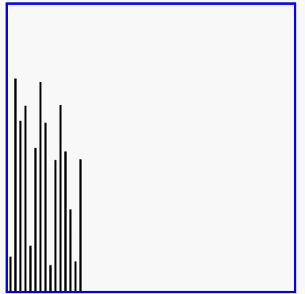

冒泡排序
冒泡排序（英语：Bubble Sort）是一种简单的排序算法。它重复地遍历要排序的数列，一次比较两个元素，如果他们的顺序错误就把他们交换过来。遍历数列的工作是重复地进行直到没有再需要交换，也就是说该数列已经排序完成。这个算法的名字由来是因为越小的元素会经由交换慢慢“浮”到数列的顶端。
冒泡排序算法的运作如下：
- 比较相邻的元素。如果第一个比第二个大（升序），就交换他们两个。
- 对每一对相邻元素作同样的工作，从开始第一对到结尾的最后一对。这步做完后，最后的元素会是最大的数。
- 针对所有的元素重复以上的步骤，除了最后一个。
- 持续每次对越来越少的元素重复上面的步骤，直到没有任何一对数字需要比较。
冒泡排序的分析
交换过程图示(第一次)：

那么我们需要进行n-1次冒泡过程，每次对应的比较次数如下图所示：

def bubble_sort(alist):
for j in range(len(alist)-1,0,-1):
# j表示每次遍历需要比较的次数，是逐渐减小的
for i in range(j):
if alist[i] > alist[i+1]:
alist[i], alist[i+1] = alist[i+1], alist[i]
li = [54,26,93,17,77,31,44,55,20]
bubble_sort(li)
print(li)
时间复杂度
- 最优时间复杂度：O(n) （表示遍历一次发现没有任何可以交换的元素，排序结束。）
- 最坏时间复杂度：O(n2)
- 稳定性：稳定
冒泡排序的演示
效果：
